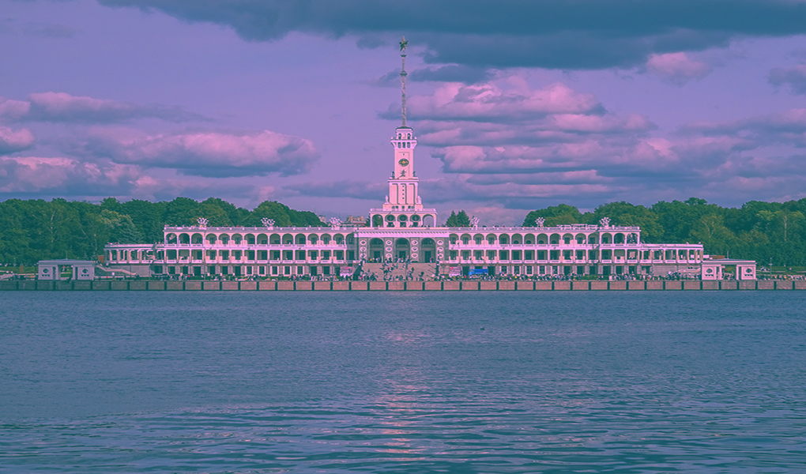

Северный речной вокзал — памятник архитектуры.
Это главное здание комплекса сооружений канала имени Москвы. Здание является выдающимся образцом архитектурного направления «сталинский ампир» и памятником архитектуры регионального значения. Находится на территории Северного административного округа города Москва, на берегу Химкинского водохранилища, и окружено большим парком.
Высота здания со шпилем 75 метров, длина по фасаду 150 метров, длина шпиля 27 метров.
История строительства
Строительство вокзала началось весной 1933 года, одновременно с работами над каналом Москва-Волга, и продолжалось четыре года и восемь месяцев. Само здание и прилегающие к нему причалы и грузовой порт были построены на сухом месте, до заполнения водохранилища. Химкинский речной вокзал стал на тот момент двенадцатым вокзалом в Москве, однако опыта создания вокзалов такого масштаба у строителей ранее не было. Принцип здания вокзала с центральной башней и шпилем стал образцом при строительстве целого ряда речных вокзалов, появившихся впоследствии, например в Красноярске и Нижнем Новгороде.
Внешний вид здания
Химкинский вокзал был первым речным вокзалом СССР, при строительстве которого решено было отойти от сугубо функционального подхода и уделить внимание эстетической стороне. Удачный синтез архитектуры, скульптуры и живописи сделал здание вокзала выдающимся образцом сталинского ампира и символом эпохи становления Москвы — «портом пяти морей». Главный архитектор вокзала Алексей Рухлядев и его соавтор Владимир Кринский при работе над зданием вокзала вдохновлялись венецианскими мотивами, изначально строение было задумано как стилизация под Дворец дожей в Венеции.
Интерьер и внутренние помещения
Проект внутренней планировки здания был новаторским для своего времени и предполагал создание многофункционального общественного пространства, в котором приятно было провести время. Техническое задание предполагало загрузку в 430 человек, единовременно находящихся в здании в месяцы активной навигации.
Чтобы сделать пребывание на вокзале максимально удобным для пассажиров, внутри обустроили ряд вспомогательных помещений. На момент передачи здания в эксплуатацию в 1937 году здесь располагались комната врача, библиотека, парикмахерская, душевая, обувная мастерская, почта, телеграф, газетный киоск, агитпункт, комнаты хранения багажа, и даже комната матери и ребёнка с отдельными игровой и спальней. На втором этаже каждой открытой веранды добавили дополнительный буфет для пассажиров.
Работы по восстановлению Северного речного вокзала начались в декабре 2018 года:
«К апрелю 2019-го специалисты восстановили большую часть из свыше чем 500 исторических светильников, в июле для реставрации со шпиля здания демонтировали звезду. Звезду шпиля отреставрировали и вернули на место в середине августа 2020 года. В ходе работ специалисты отреставрировали золотое покрытие звезды, посеребрили серп и молот, перебрали и восстановили самоцветы и вернули работоспособность механизму, который поднимал звезду в начале навигации по реке и опускал её в конце».
Речной вокзал в кино
В советское время в здании Речного вокзала нередко проводились киносъёмки. После выхода в прокат музыкальной комедии Григория Александрова «Волга-Волга» в 1938 году здание порта получило широкую известность и стало одним из главных символов «Новой Москвы».
Другие фильмы, в которых появлялось здание вокзала:
- Новая Москва (Мосфильм, 1938);
- Коллеги (Мосфильм, 1962);
- Горожане (Киностудия имени М. Горького, 1975);
- Гонки по вертикали (Киностудия имени А. Довженко, 1983);
- По семейным обстоятельствам (Мосфильм, 1977);
- Вместо меня (2000);
- ДМБ (2000);
- День выборов (2007);
Награды и премии
За работу над комплексом сооружений «Москва-Волга» и, в частности, над зданием Северного Речного вокзала архитектор Алексей Рухлядев в 1937 году был награждён орденом Ленина. Также в 1937 году Рухлядев представил проект здания на Парижской международной выставке искусств и техники, где был награждён дипломом Большой премии.
Парк и прилегающие территории
Здание вокзала окружено большим парком площадью более 50 га, созданным по проекту Т. П. Шафранского. Парк украшали более 14 скульптурных групп и фонтанов, дизайн которых рифмовался с образом главного здания и был выдержан в характерной эстетике сталинской архитектуры. На 2018-й год из них сохранились единицы.
В 1960 году слева от здания вокзала был установлен памятник учёному-кораблестроителю Алексею Крылову. Монумент работы Льва Кербеля развёрнут лицом к набережной.